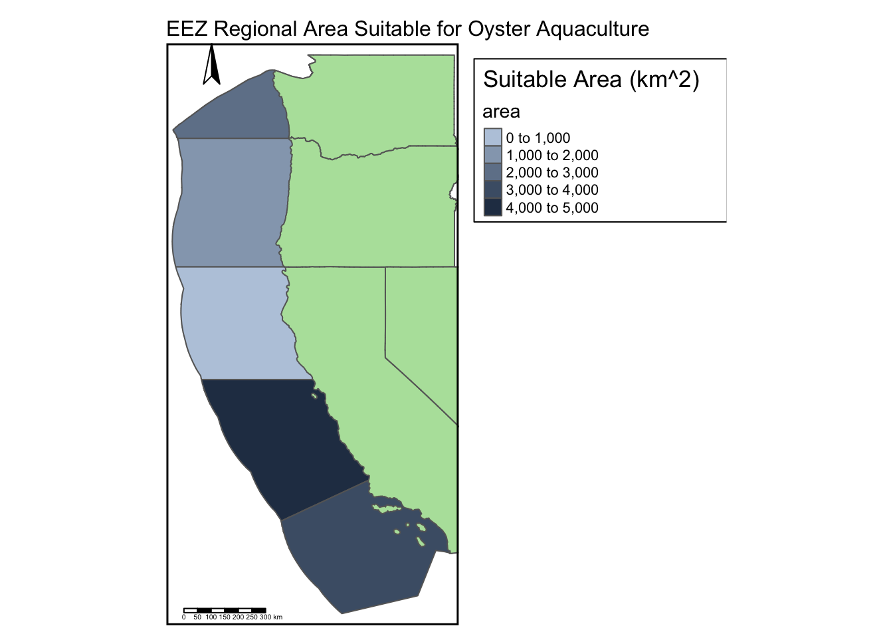
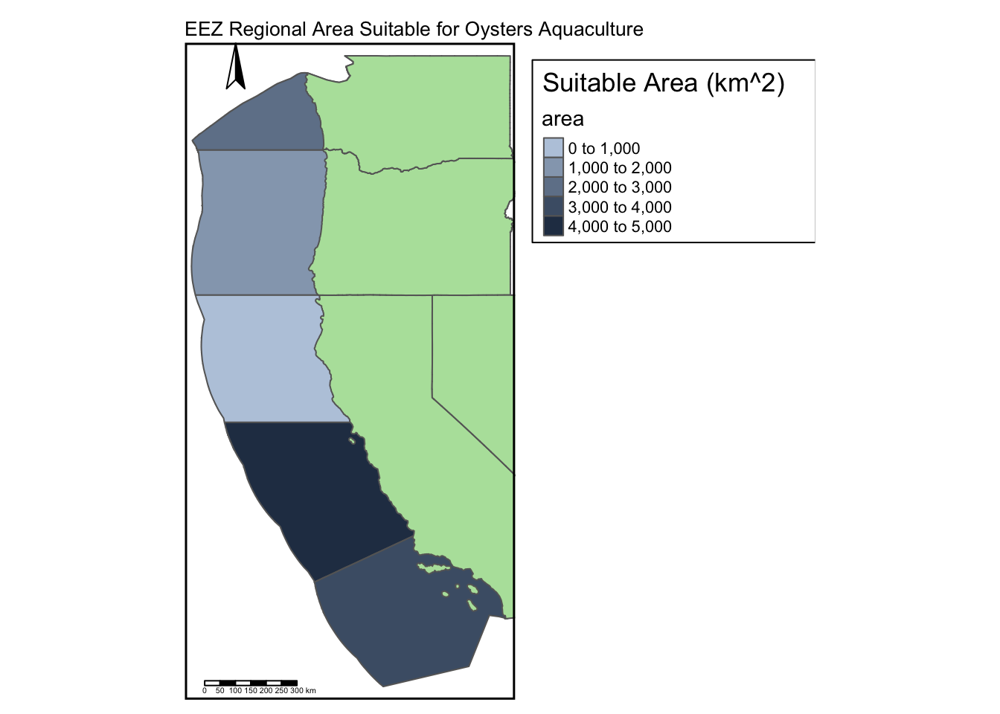
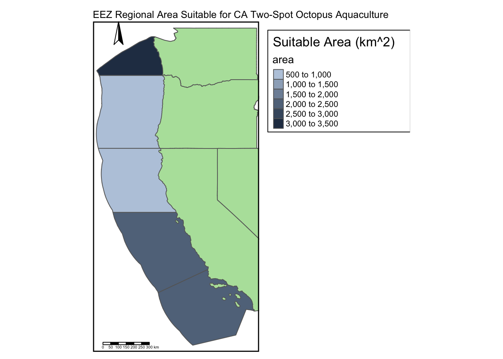

Show the code
# Import libraries
library(tidyverse)
library(here)
library(sf)
library(terra)
library(patchwork)
library(raster)
library(tmap)
library(testthat)
library(kableExtra)Prioritizing potential aquaculture
# Import libraries
library(tidyverse)
library(here)
library(sf)
library(terra)
library(patchwork)
library(raster)
library(tmap)
library(testthat)
library(kableExtra)# Import bathymetry raster
bathy <- rast(here("data","depth.tif"))
# Check bathy crs
# st_crs(bathy) # Uncomment to check
# Import SST rasters
sst_raster_list <- list.files(here("data/"),
pattern = "average*",
full.names = TRUE)
# Combine SST rasters into a raster stack
sst_raster_stack <- rast(sst_raster_list) %>%
project("EPSG:4326")
# Check sst_raster_stack crs
# st_crs(sst_raster_stack) # Uncomment to check
# Import shapefile for the West Coast EEZ
wc_eez <- st_read(here("data","wc_regions_clean.shp")) %>%
st_transform(st_crs(bathy)) # set crs to bathyReading layer `wc_regions_clean' from data source
`/Users/nmoraes/Documents/MEDS/Fall2024/EDS223/Homework/hw4-nmoraescommit/data/wc_regions_clean.shp'
using driver `ESRI Shapefile'
Simple feature collection with 5 features and 5 fields
Geometry type: MULTIPOLYGON
Dimension: XY
Bounding box: xmin: -129.1635 ymin: 30.542 xmax: -117.097 ymax: 49.00031
Geodetic CRS: WGS 84# Import census state shapefiles for basemap
west_coast_states <- st_read(here("data", "tl_2024_us_state","tl_2024_us_state.shp")) %>%
filter(STUSPS %in% c("WA", "OR", "CA", "NV")) %>%
st_transform(st_crs(bathy))Reading layer `tl_2024_us_state' from data source
`/Users/nmoraes/Documents/MEDS/Fall2024/EDS223/Homework/hw4-nmoraescommit/data/tl_2024_us_state/tl_2024_us_state.shp'
using driver `ESRI Shapefile'
Simple feature collection with 56 features and 15 fields
Geometry type: MULTIPOLYGON
Dimension: XY
Bounding box: xmin: -179.2311 ymin: -14.60181 xmax: 179.8597 ymax: 71.43979
Geodetic CRS: NAD83# Check if CRS match
if(st_crs(sst_raster_stack) == st_crs(wc_eez) & st_crs(wc_eez) == st_crs(bathy)){
print("All CRS match! Continue on!")
}else{
warning("CRS DO NOT MATCH! Try again!")
}[1] "All CRS match! Continue on!"# Find the mean SST from 2008-2012 and convert to Celsius
sst_mean_kelvin <- sst_raster_stack %>%
terra::mean()
sst_mean_celsius <- sst_mean_kelvin - 273.15
# Crop depth raster to match the extent of SST raster
depth_crop <- crop(x = bathy, y = sst_mean_celsius)
# Resample depth raster to match resolution of SST raster
depth_resample <- resample(x = depth_crop, y = sst_mean_celsius, method = "near")
# Check if resolution, extent, and CRS match
expect_equal(resolution(sst_mean_celsius), resolution(depth_resample))
expect_equal(ext(sst_mean_celsius), ext(depth_resample))
expect_equal(st_crs(sst_mean_celsius), st_crs(depth_resample))# Reclassify SST and depth for oysters
# Create reclassification matrix
sst_matrix <- matrix(c(-Inf, 11, NA,
11, 30, 1,
30, Inf, NA),
ncol = 3,
byrow = TRUE)
depth_matrix <- matrix(c(-Inf, -70, NA,
-70, 0, 1,
0, Inf, NA),
ncol = 3,
byrow = TRUE)
# Apply matrix to data
sst_satisfactory <- classify(sst_mean_celsius,
rcl = sst_matrix)
depth_satisfactory <- classify(depth_resample,
rcl = depth_matrix)# Use map algebra through lapp() to identify suitable locations
# Create function to multiply cell values across layers
function_satisfactory <- function(sst, depth) {
return(sst * depth)
}
# Apply function to the reclassified sst and depth data
locations_satisfactory <- lapp(c(sst_satisfactory, depth_satisfactory),
fun = function_satisfactory)# Determine total suitable area within each EEZ, and rank by priority
# Select suitable cells within west coast EEZs
area_satisfactory <- cellSize(x = locations_satisfactory,
mask = TRUE,
unit = "km",
transform = FALSE)
# Rasterize wc_eez data
wc_eez_raster <- rasterize(x = wc_eez,
y = locations_satisfactory,
field = "rgn_id")
# Compute the total suitable area within each EEZ
area_satisfactory <- zonal(x = area_satisfactory,
z = wc_eez_raster,
fun = "sum",
na.rm = TRUE
)# Find the total suitable by region - (area_satisfactory/wc_eez)
region_by_area_satisfactory <- left_join(wc_eez, area_satisfactory,
by = "rgn_id") %>%
mutate(area_percentage = ((area / area_km2) * 100))# Visualize data - map of total suitable area by region
total_area_region_plot <-
tm_shape(region_by_area_satisfactory)+
tm_polygons(col = 'area',
palette = c('#BACADE','#273B53')) +
tm_shape(west_coast_states)+
tm_polygons(col = '#B4E1A9') +
tm_compass(position = c(0.05,0.93)) +
tm_scale_bar(position = c(0.05,0)) +
tm_layout(main.title = "EEZ Regional Area Suitable for Oyster Aquaculture",
main.title.position = 0.0,
main.title.size = 1,
frame = TRUE,
frame.lwd = 3,
legend.outside = TRUE)+
tm_legend(title = "Suitable Area (km^2)",
frame = TRUE,
frame.lwd = 1)
total_area_region_plot
region_area_table_data <- region_by_area_satisfactory %>%
dplyr::select(rgn, area, area_percentage) %>%
arrange(desc(area)) %>%
st_drop_geometry()
region_area_table <- kable(region_area_table_data, caption = paste0("Areas suitable for Oyster aquaculture"))
region_area_table| rgn | area | area_percentage |
|---|---|---|
| Central California | 4069.5671 | 2.0073003 |
| Southern California | 3508.1870 | 1.6959169 |
| Washington | 2378.2758 | 3.5550611 |
| Oregon | 1074.2562 | 0.5968287 |
| Northern California | 178.0246 | 0.1083014 |
# Expand previous work into reproducible workflow, for other species
species_suitability_function_plot <- function(min_temp, max_temp, min_depth, max_depth, species_name){
# Data Imported and Processed
# Suitable Locations
# Reclassify SST and depth for species
# Create reclassification matrix
sst_matrix <- matrix(c(-Inf, min_temp, NA,
min_temp, max_temp, 1,
max_temp, Inf, NA),
ncol = 3,
byrow = TRUE)
depth_matrix <- matrix(c(-Inf, -(abs(max_depth)), NA, #create absolute to negate user input, and then create negative
-(abs(max_depth)), -(abs(min_depth)), 1,
-(abs(min_depth)), Inf, NA),
ncol = 3,
byrow = TRUE)
# Apply matrix to data
sst_satisfactory <- classify(sst_mean_celsius,
rcl = sst_matrix)
depth_satisfactory <- classify(depth_resample,
rcl = depth_matrix)
# Use map algebra through lapp() to identify suitable locations
# Create function to multiply cell values across layers
function_satisfactory <- function(sst, depth){
return(sst * depth)
}
# Apply function to the reclassified sst and depth data
locations_satisfactory <- lapp(c(sst_satisfactory, depth_satisfactory),
fun = function_satisfactory)
# Determine total suitable area within each EEZ, and rank by priority
# Select suitable cells within west coast EEZs
area_satisfactory <- cellSize(x = locations_satisfactory,
mask = TRUE,
unit = "km",
transform = FALSE)
# Rasterize wc_eez data
wc_eez_raster <- rasterize(x = wc_eez,
y = locations_satisfactory,
field = "rgn_id")
# Compute the total suitable area within each EEZ
area_satisfactory <- zonal(x = area_satisfactory,
z = wc_eez_raster,
fun = "sum",
na.rm = TRUE
)
# Find the total suitable by region - (area_satisfactory/wc_eez)
region_by_area_satisfactory <- left_join(wc_eez, area_satisfactory,
by = "rgn_id") %>%
mutate(area_percentage = ((area / area_km2) * 100))
# Visualize data - map of total suitable area by region
total_area_region_plot <-
tm_shape(region_by_area_satisfactory)+
tm_polygons(col = 'area',
palette = c('#BACADE','#273B53')) +
tm_shape(west_coast_states)+
tm_polygons(col = '#B4E1A9') +
tm_compass(position = c(0.05,0.93)) +
tm_scale_bar(position = c(0.05,0)) +
tm_layout(main.title = (paste0("EEZ Regional Area Suitable for ", species_name," Aquaculture")),
main.title.position = 0.0,
main.title.size = 0.83,
frame = TRUE,
frame.lwd = 3,
legend.outside = TRUE)+
tm_legend(title = "Suitable Area (km^2)",
frame = TRUE,
frame.lwd = 1)
total_area_region_plot
}species_suitability_function_table <- function(min_temp, max_temp, min_depth, max_depth, species_name){
# Data Imported and Processed
# Suitable Locations
# Reclassify SST and depth for species
# Create reclassification matrix
sst_matrix <- matrix(c(-Inf, min_temp, NA,
min_temp, max_temp, 1,
max_temp, Inf, NA),
ncol = 3,
byrow = TRUE)
depth_matrix <- matrix(c(-Inf, -(abs(max_depth)), NA, #create absolute to negate user input, and then create negative
-(abs(max_depth)), -(abs(min_depth)), 1,
-(abs(min_depth)), Inf, NA),
ncol = 3,
byrow = TRUE)
# Apply matrix to data
sst_satisfactory <- classify(sst_mean_celsius,
rcl = sst_matrix)
depth_satisfactory <- classify(depth_resample,
rcl = depth_matrix)
# Use map algebra through lapp() to identify suitable locations
# Create function to multiply cell values across layers
function_satisfactory <- function(sst, depth){
return(sst * depth)
}
# Apply function to the reclassified sst and depth data
locations_satisfactory <- lapp(c(sst_satisfactory, depth_satisfactory),
fun = function_satisfactory)
# Determine total suitable area within each EEZ, and rank by priority
# Select suitable cells within west coast EEZs
area_satisfactory <- cellSize(x = locations_satisfactory,
mask = TRUE,
unit = "km",
transform = FALSE)
# Rasterize wc_eez data
wc_eez_raster <- rasterize(x = wc_eez,
y = locations_satisfactory,
field = "rgn_id")
# Compute the total suitable area within each EEZ
area_satisfactory <- zonal(x = area_satisfactory,
z = wc_eez_raster,
fun = "sum",
na.rm = TRUE
)
# Find the total suitable by region - (area_satisfactory/wc_eez)
region_by_area_satisfactory <- left_join(wc_eez, area_satisfactory,
by = "rgn_id") %>%
mutate(area_percentage = ((area / area_km2) * 100))
region_area_table_data <- region_by_area_satisfactory %>%
dplyr::select(rgn, area, area_percentage) %>%
arrange(desc(area)) %>%
st_drop_geometry()
region_area_table <- kable(region_area_table_data, caption = paste0("Areas suitable for ",species_name," aquaculture"))
region_area_table
}# Test Function with Oysters
species_suitability_function_plot(min_temp = 11, max_temp = 30, min_depth = 0, max_depth = 70, species_name = "Oysters")
species_suitability_function_table(min_temp = 11, max_temp = 30, min_depth = 0, max_depth = 70, species_name = "Oysters")| rgn | area | area_percentage |
|---|---|---|
| Central California | 4069.5671 | 2.0073003 |
| Southern California | 3508.1870 | 1.6959169 |
| Washington | 2378.2758 | 3.5550611 |
| Oregon | 1074.2562 | 0.5968287 |
| Northern California | 178.0246 | 0.1083014 |
species_suitability_function_plot(min_temp = 10.5, max_temp = 26.8, min_depth = 0, max_depth = 50, species_name = "CA Two-Spot Octopus")
species_suitability_function_table(min_temp = 10.5, max_temp = 26.8, min_depth = 0, max_depth = 50, species_name = "CA Two-Spot Octopus")| rgn | area | area_percentage |
|---|---|---|
| Washington | 3197.0197 | 4.7789245 |
| Central California | 2378.8592 | 1.1733643 |
| Southern California | 2350.8424 | 1.1364370 |
| Northern California | 988.6481 | 0.6014450 |
| Oregon | 862.0901 | 0.4789548 |
In this workflow, I learned to create and improve upon function creation as well as raster analysis techniques. Through this project, we can see the predicted range of aquaculture across the west coast and how different species can benefit from being farmed in different areas, for optimal farming practices. The functionalities of this workflow can be expanded in the context of climate change analysis, as we can observe how changing temperatures and sea levels contribute to increased difficulty in aquaculture practices. Updating the ocean zone data and base map data, will allow other users translate the base code to analyse other aquaculture regions.
| Data | Citations | URL |
|---|---|---|
| NOAA’s 5km Daily Global Satellite Sea Surface Temperature Anomaly v3.1 | Watch, N. C. R. (n.d.). Daily Global 5km Satellite Sea Surface Temperature Anomaly. NOAA Coral Reef Watch Daily 5km satellite coral bleaching heat stress SST anomaly product (version 3.1). https://coralreefwatch.noaa.gov/product/5km/index_5km_ssta.php | https://coralreefwatch.noaa.gov/product/5km/index_5km_ssta.php |
| General Bathymetric Chart of the Oceans | GEBCO Compilation Group (2022) GEBCO_2022 Grid (doi:10.5285/e0f0bb80-ab44-2739-e053-6c86abc0289c) | https://www.gebco.net/data_and_products/gridded_bathymetry_data/#area |
| Exclusive Economic Zones | Search Map interface Methodology Attribute table Line types About EEZ boundaries. Marine regions. (n.d.). https://www.marineregions.org/eez.php | https://www.marineregions.org/eez.php |